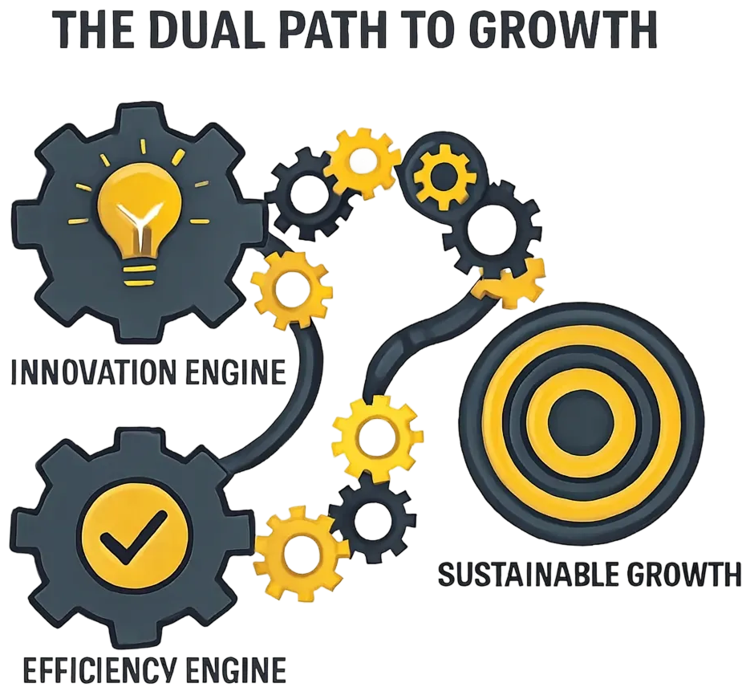

In our
previous episode, we defined Governance as the "operating system"
that sets the course for the transformation. Now, we enter the engine room.
Delivery is the set of disciplined practices that propels the transformation
forward, ensuring that work is executed with precision and that the outputs
generate real, strategic value.
If
governance is about making the right decisions , delivery is about making
the decisions happen right . It is the active, hands-on management of the
programs and initiatives that turn architectural blueprints into tangible
operational capabilities.
The Starting Point
The
work for the delivery engine the sanctioned programs and initiatives does not
appear out of nowhere. It is the direct output of the Strategic Portfolio
Management (SPM) process.
As we
discussed in Episodes 2.2 and 3.1, SPM is the governance-level discipline of
selecting and prioritizing investments. It answers the question, "What are
the right things to do to achieve our strategic objectives?" Once
the portfolio governance bodies have made those decisions, the focus shifts
from "doing the right things" to "doing things right." This
is where the delivery engine takes over.

Figure 1: Two Tracks of Delivery - Value Assurance & Delivery Assurance
The Two Halves of
Delivery
Effective
delivery is a dual discipline that operates at two distinct levels. This
separation is critical for maintaining both strategic alignment and tactical
control.
Value Assurance (Program
Management): "Realizing the Value"
This occurs at the L1/L2 level
of our hierarchy. Once a program is sanctioned by the portfolio, the
Program Manager becomes accountable for ensuring the collection of
initiatives within it successfully delivers the intended business outcome
and moves the target Leading KPIs. Their focus is strategic: managing
cross-initiative dependencies, ensuring the business is prepared to adopt
the changes, and preventing "value leakage" between project
completion and operational reality.
Delivery Assurance (Project
Management): "Doing Things Right"
This is the classic L2/L3
execution discipline. The Project Manager is accountable for the
"iron triangle": delivering their specific initiative and its
Master Deliverable on scope, on time, and on budget. Their focus is
tactical: managing work plans, resolving blockers, tracking progress, and
ensuring the quality of the final output.
The Modern PMO
In
this architected model, the Transformation Management Office (TMO or PMO) is
the central hub of expertise that provides the frameworks , standards, and
direct support for both Value and Delivery Assurance. It is responsible for:
Setting Standards: Providing the
templates and guidelines for project plans, risk registers, and status
reporting.
Building Capability: Coaching
and mentoring Project and Program Managers across the organization.
Managing Dependencies: Owning
the master integrated roadmap that makes cross-program dependencies
visible.
Active Risk Management:
Identifying and escalating program-level risks that individual project
teams may not see.
Framing Delivery as
Active Risk Management
The
entire delivery function is a risk management discipline.
Delivery
Assurancemanagesproject-level risks: timeline slips, budget overruns, and
scope creep.
Value
Assurancemanagesprogram-level risks: benefit shortfalls, poor adoption by
the business, and failures in interdependency coordination.
By
separating these concerns, the transformation can address both the immediate
risks to execution and the strategic risks to the business case.
The Digital Twin: A
Real-Time Model of Delivery
The
delivery engine is tracked and modeled in real-time within the Digital Twin.
Every status update, every completed milestone, and every flagged risk from the
PMO's tools feeds directly into the model.
This
creates a high-fidelity simulation of the transformation's execution, allowing
the GenAI interface to serve as the ultimate delivery analyst:
"Which programs are
currently showing the highest risk of value leakage?"
"Based on the current
project delivery velocity, forecast the completion date for the 'Digital
Licensing' program."
Key Takeaways
The Delivery Engine executes the
programs and initiatives selected and prioritized throughStrategic
Portfolio Management.
Effective delivery is adual
disciplinecomposed ofValue Assurance(ensuring program value) andDelivery
Assurance(ensuring project execution).
The modern PMO is anactive
engineof the transformation , providing the standards and expertise to
enable delivery.
The Digital Twin provides
areal-time, predictive modelof the entire delivery ecosystem, enabling
data-driven oversight and course correction.